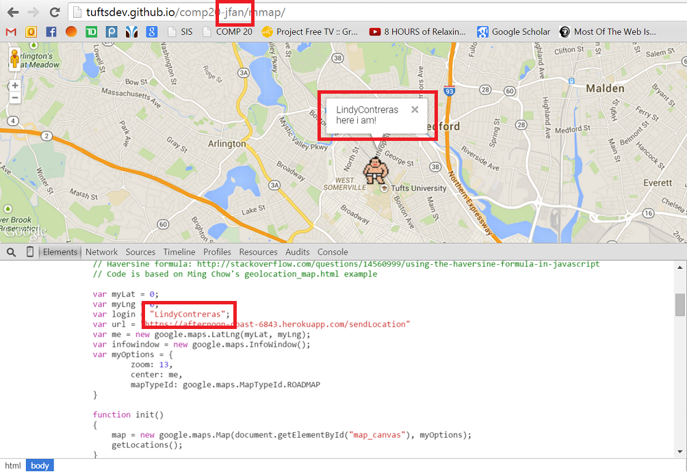
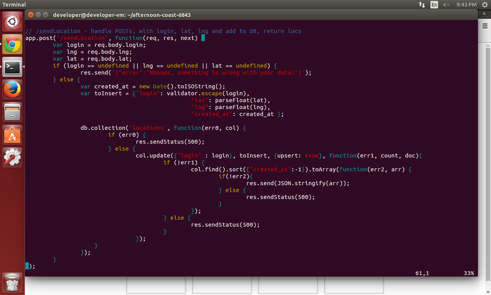
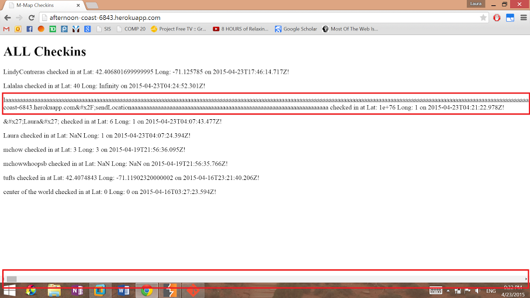
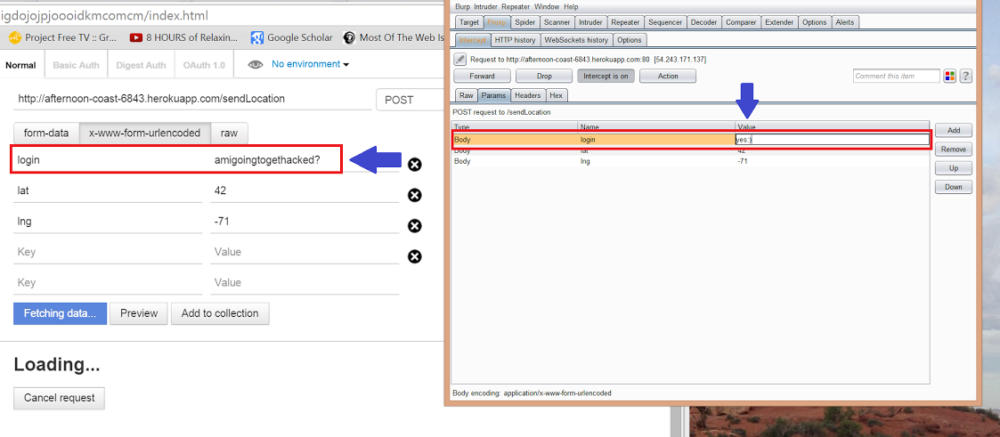

I have been hired to review the security and privacy concerns of Jason Fan's Marauder's Map on both the server-side and client-side. Maruader's Map is a product that is attached to a heroku app server where locations can be posted to. The client uses the Google Maps API to put these locations and the associated login into markers on a map.
I began by trying to attack the code from the outside, using a black-box approach. I used curl initially to check for vulnerabilities to XSS, however Jason was smart enough to escape all user input in order to change special characters to html encoded. After checking for XSS, I thought about what data I could enter that could possibly crash or overload the app. In combination with looking at the source code, I found that other html encoding and checking to be sure all fields were present, the input was not checked. Therefore, I could potentially overload the serve with tons of input. I also looked at the mmap website to look for breaches of privacy.
Although many students had issues with XSS, Jason successfully avoided this vulnerability by escaping user input. However, user input is not limited in length and therefore it is possible to fill the database with garbage. Also on the clientside, Jason's fictitious login is easily linked to his identity, therefore not protecting his privacy. TALK ABOUT THIRD ISSUE
Description: Jason's fictitious login, "LindyContreras", is meant to protect his privacy. However, it is coded into the JavaScript on his mmap page. This page is accessible via the first letter of his first name followed by last name, a formula that anyone can determine just by knowing his name. Therefore anyone can simply type in the correct formula in the URL bar to see Jason's mmap and also reveal his fictititous login, which is clearly no longer protecting his privacy.
Location: The login is hard coded into the JavaScript on the html page for Jason's mmap.
Severity: Medium. For the purposes of this assignment, no sensitive information is being revealed aside from location. However, it is not good practice to use a login that is meant to keep information private when it can easily be bypassed.
Proof: both identifiers are on the page when you see the source code.
Resolution: Somehow the login must not be associated with the URI that includes "jfan". The best way to do this may be to prompt the user to input a username upon accessing the page (of course this data should not be trusted and should be validated).
Description: Neither the client nor the server checks to see how long user input from the post request is before adding it to the database. It is possible to fill the database with garbage in order to max out the storage allowed on MongoLab before the owner of the app is charged for the amount of data.
Location: In the code for the get request, data is not checked for length.
Severity: Mild. Although I used a rudimentary method of copy and pasting a very long string in curl, someone with real malicious intentions could create a script to put huge amounts of data into POST requests and max out the free storage on MongoLab. However inconvenient this may be for Jason (as his credit card information is attached to the app) and whoever tries to find valuable information among these garbage inputs, it will not prevent the app from working.
Proof: note the length of the horizontal scroll bar
Resolution: Data parsed from the request should be checked for length. Body-parser is included in the file but not actually used to check request data. Body-parser has an automatic limit of 100kb, but can be specified to a different amount better suited to a reasonable length for a login or latitute or longitude with the code: app.use(express.bodyParser({limit: 'X mb'})). (See here and here)
Description: Using a proxy, it is possible (and very easy) to manipulate user input. I can easily change the parameters of the POST request to /sendLocation and change the user's login or location using Burp Suite. I can also change the query in the GET request to /location.json in order to access a different user's location.
Location: I used a proxy to tamper with request data for both afternoon-coast-6843.herokuapp.com/location.json and afternoon-coast-6843.herokuapp.com/sendLocation.
Severity: Severe. Data can be tampered with by a third party in order to falsify records being put into the API or give access to a document other than the one that the user used a query for.
Proof: See how I can simply change the value of a field or even add or modify fields.
Resolution: Proxies can be blocked manually or automatically. Doing so manually would take a lot of work and knowledge of the IP addresses of all proxies, many of which change every day. Blacklists exist to aid in this process, but several software options exist which take care of blocking proxies automatically once implemented. Examples include BlockScript or ProxyGuard. Check out this link for a brief description of ways to block proxies on your website.